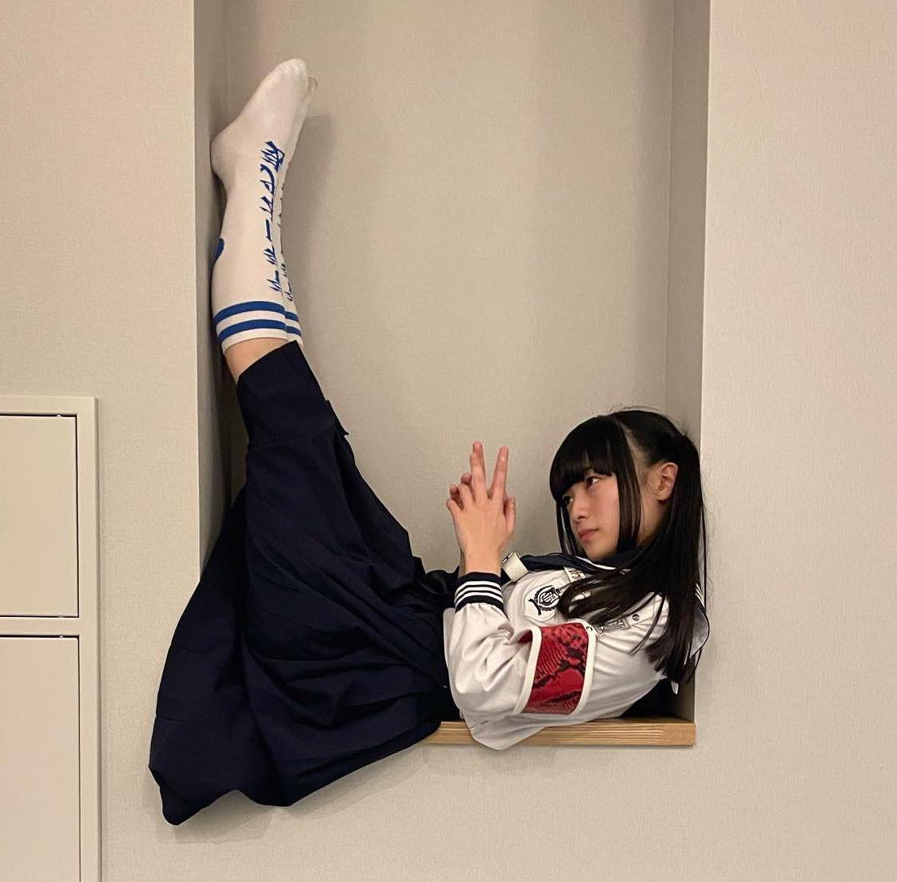
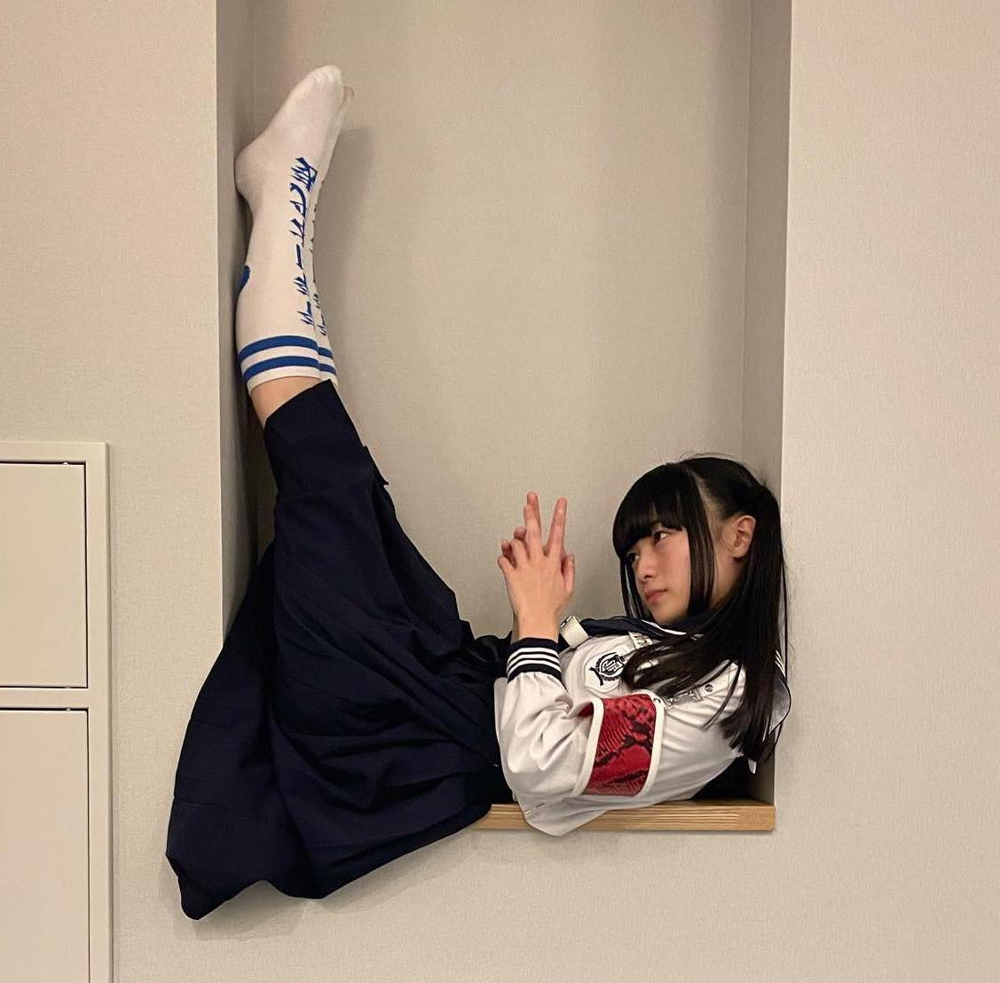

Things about Mizyu
Stage Name: MIZYU
Birth Name: Ishii Mizuki (石井美月)
Position: Leader
Birthday: December 22, 1998
Zodiac Sign: Capricorn
Chinese Zodiac: Tiger
Height: 151 cm (4’11”)
Nationality: Japanese
Twitter: @mizyuzyun
Instagram: @mizyu_leaders
 
